RuneScape 3 plugin
Bank
Organiser
Sorts your whole bank into sensible tabs, then puts every tab in order. It highlights what to move and where, right on your bank. You make every drag.
- Free
- Requests no permissions
- Never moves anything itself
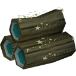
5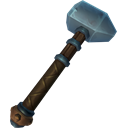
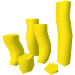
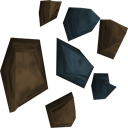
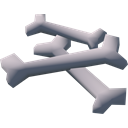
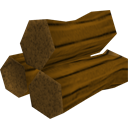
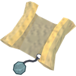
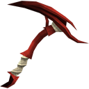
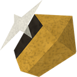
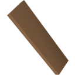
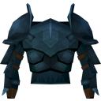
An illustration of what the plugin draws on your bank.
How it works
Plugins aren't allowed to move items for you, so Bank Organiser shows you exactly what to do, one tab at a time, on top of the real bank. The colours always mean the same thing.
Green: drag this
Items to move now, numbered in the order to drag them.
Yellow: drop it here
The tab, the + button or the item to drop it on.
Blue: click this
Like the all-items tab, or the arrow that scrolls your tabs.
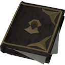
Plan
Reads your bank and works out where every item belongs, building on the tabs you already have.
Move
Drag the green items onto the yellow tab, in number order. The banner tells you if each one landed right.
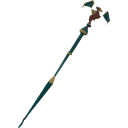
Order
Drag your tabs into the plan's order, each with an icon that shows what it holds.
Sort
Put the items inside each tab in order: sets together, potions from 4 doses down to 1.
A bank that makes sense
The Recommended plan uses all 14 tabs. Small tabs join a related one, and tabs you already have are kept or reused, so as little as possible has to move.
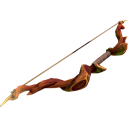
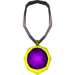
Or choose Compact, Skiller or Simple, or design your own tabs
Your bank, your rules
Builds on your tabs
Tabs that already fit are kept, tabs that fit nothing are reused, and a new tab is only suggested when it's needed. Nothing is deleted.
Every tab in order
Gear by level with each set together, runes in the usual order, potions by type, herbs grimy to clean to unfinished, quest items by quest.
The right icon for every tab
Picks the clearest item you own for each tab's icon (your best weapon for Melee, your best food for Food & potions) and sets it first.
Edit the plan
Rename, move, add or delete tabs, choose which kinds of item each one holds, and send items to a tab by name or by pointing at them.
Lock any tab
A locked tab is left exactly as it is: nothing moves in or out, and it isn't sorted.
Tidy just one tab
Open a single tab and the plugin works on that tab alone: what belongs elsewhere moves out, then the tab is put in order.
Point at anything
Hover over a bank item to see which tab it belongs in. Items in your backpack show their tab number, so you can deposit straight into the right place.
Any size of bank
If a tab is scrolled out of view, it points you to the arrow. In big tabs, items that have to travel further than fits on screen go part of the way first.
Private by design
Requests no permissions and sends nothing anywhere. Your plan and settings stay on your computer, kept separately for each character.
How each tab is ordered
The tab's icon item comes first, then each kind of item in the order your plan lists them. Within each kind:
- Gear
- By level, lowest first, each set together: weapon, off-hand, head, body, legs, hands, feet, shield, cape, neck, ring.
- Runes
- Elemental, then combination, then the rest, with Necromancy runes last.
- Potions
- Every dose of a potion together, from 4 doses down to 1.
- Food
- By how much it heals.
- Herblore
- Grimy herbs, clean herbs, unfinished potions, then the rest.
- Skilling
- In the order you use them (logs before bows, ores before bars), then by level.
- Clues
- Easy, medium, hard, elite, master.
- Quest items
- Grouped by quest.
- Cosmetics
- Grouped by outfit.
Get Bank Organiser
Install
- In RuneScape, open the Plugin Hub and search for Bank Organiser, or find it on mod.io.
- Turn it on in the Plugin Hub's Manage tab.
- Open your bank, then the plugin window from its ribbon icon.
- Click the all-items tab and follow the banner on your bank.
Plugins appear in the Plugin Hub once Jagex has reviewed them.
Source & releases
The full source, the tests and every release are on GitHub. Found a bug or have an idea? Open an issue there.
Questions & answers
Can it move the items for me?
No. Plugins aren't allowed to act for you, so it shows you what to do and you make every drag. Each one is quick: the item to drag glows green and where it goes is boxed in yellow.
Will it delete my tabs?
No. It builds on the tabs you have: tabs that fit are kept, tabs that fit nothing are reused, and a new tab is only suggested when needed. A tab only goes when you've moved everything out of it.
How does it decide where things go?
Every item gets a kind (melee gear, runes, logs, quest items and so on) from the game's own item details: its Grand Exchange category, combat style and type. Your plan says which kinds share a tab, and you can change it.
Why drag in number order?
An item dropped on a tab goes to the end of it. Dragging in number order leaves the tab sorted already, so there's less to do afterwards.
What does "part of the way" mean?
In a big tab, an item and the place it goes can be further apart than fits on screen, so they can't be dragged in one go. Drop it on the yellow item part of the way, and it's asked for again from there.
Can I stop and come back later?
Yes. The plugin checks your bank after every change, so you can pause, skip a tab for now or close the bank and pick up where you left off.
Does it work in other languages?
Items are sorted using the game's item details, but some rules read English item names, so a few items may be misplaced if your game is set to another language. The plugin tells you if so.
Is anything sent anywhere?
No. The plugin requests no permissions. Your plan, settings and tab locks are saved only on your computer, and you can delete them from the plugin window at any time.